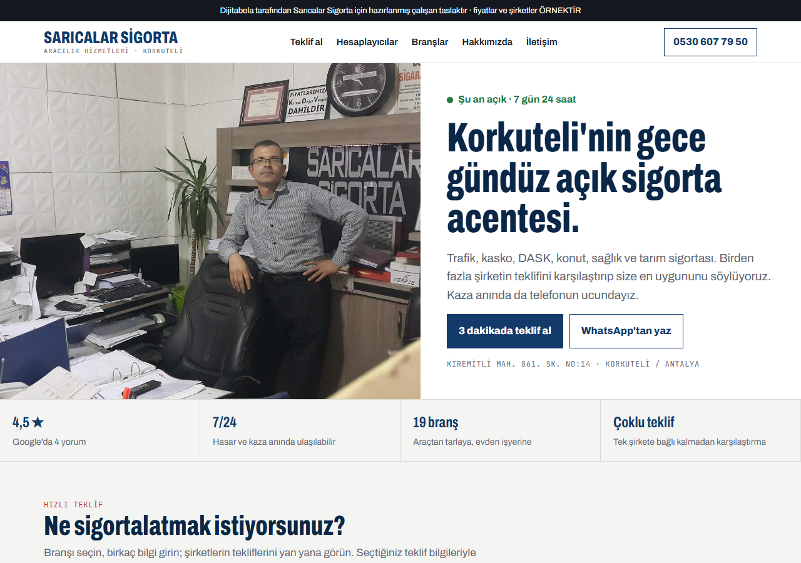
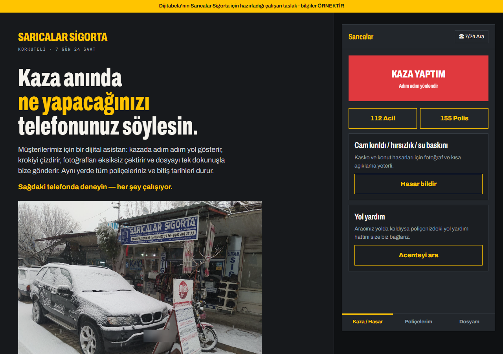
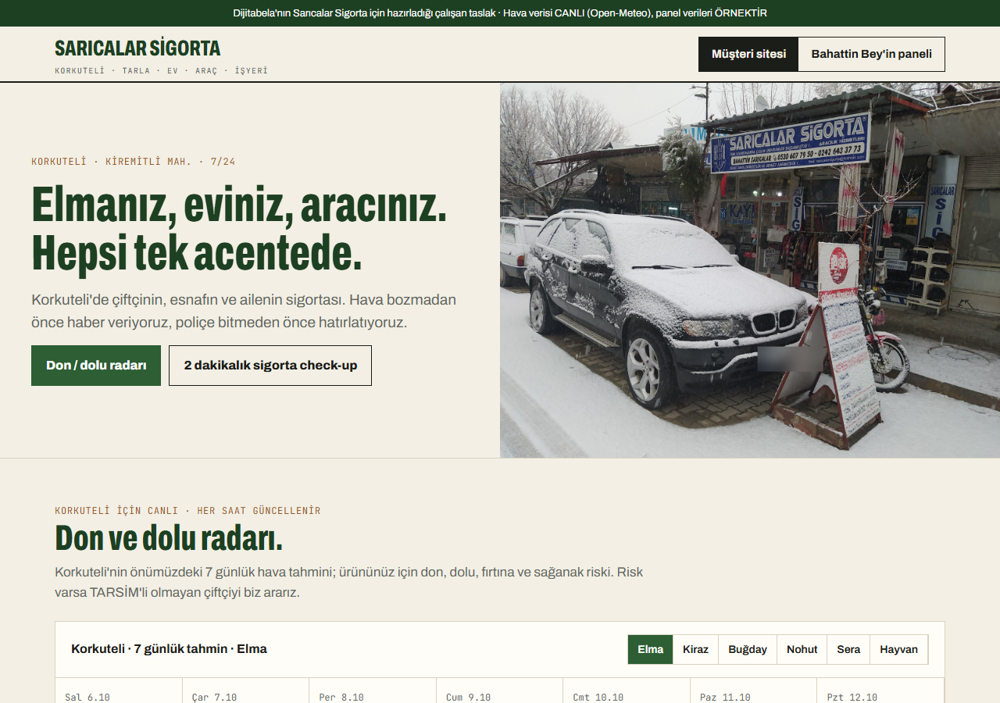

1 · Tasarımınızı seçin

① Teklif Merkezi
Açık zemin, lacivert ve kırmızı; ofisinizden gerçek fotoğraflar. Müşteri 3 dakikada teklifini görür.
- 8 branşta akıllı teklif sihirbazı
- Şirket tekliflerini yan yana karşılaştırma
- Trafik basamak hesaplayıcı
- DASK bitiş hatırlatıcısı (telefon takvimine)
- 19 branşın tamamı, harita, 7/24 arama

② Kaza Anı Asistanı
Koyu asfalt, sarı şerit. Müşterinizin telefonunda uygulama gibi çalışır.
- Kazada 6 adım: güvenlik, fotoğraf, kroki, tutanak, konum, gönder
- Parmakla sürükle-bırak kaza krokisi
- Poliçe cüzdanı: bitişe kaç gün kaldı
- Trafik kontrolünde QR ile poliçe
- Hasar dosyası takibi

③ Korkuteli + Acente Paneli
Toprak tonları, yeşil. Çiftçi, esnaf ve aile için; arkasında sizin yönetim paneliniz.
- Canlı don / dolu radarı (elma, kiraz, hububat, sera)
- 2 dakikalık sigorta check-up ve eksik teminat raporu
- Panel: bu ay biten poliçeler, otomatik hatırlatmalar
- Çapraz satış listeleri (trafiği var, kaskosu yok…)
- Hasar dosyaları ve gelen talepler tek ekranda
Tasarımlar birbirinin içine eklenebilir: örneğin ① numaralı siteye ② numaralı kaza asistanı ve ③ numaralı panel eklenebilir. Seçtiğiniz pakete göre birleştiriyoruz.
2 · Üç tasarımda da olanlar
- Gerçek fotoğraflarınızStok görsel yok; ofisiniz, dükkânınız, siz.
- 7/24 tek dokunuşla arama ve WhatsAppTelefonda ekranın altında her zaman.
- Hazır mesajlı taleplerMüşterinin seçtikleri WhatsApp'ınıza bilgileriyle düşer; tekrar soru sormazsınız.
- 19 branşın tamamıTrafikten TARSİM'e, inşaat all risk'ten otel paketine.
- KVKK'ya uygunT.C. kimlik no gibi bilgiler sitede istenmez; çerez ve aydınlatma metni hazır.
- Google'a uygun altyapıHaritalar kaydınızla birlikte çalışacak şekilde kurulur; Korkuteli aramalarına göre hazırlanır.
3 · Sigortacılığa özel özellikler ve entegrasyonlar
| Özellik | Ne işe yarar | Görün | Dijital | Akıllı |
|---|---|---|---|---|
| Teklif sihirbazı | Branşa göre doğru soruları sorar, talebi eksiksiz getirir | — | ✓ | ✓ |
| Çoklu şirket karşılaştırma | Yetkili olduğunuz şirketlerin tekliflerini tek ekranda gösterir | — | ek | ✓ |
| Poliçe bitiş hatırlatma otomasyonu | 30 / 15 / 7 gün kala müşteriye WhatsApp; yenileme kaçmaz | — | ✓ | ✓ |
| Kaza anı asistanı + kroki | Eksiksiz fotoğraf ve bilgiyle dosya; hasar süreci hızlanır | — | ✓ | ✓ |
| Poliçe cüzdanı (müşteri girişi) | Müşteri tüm poliçelerini ve bitiş tarihlerini görür | — | — | ✓ |
| Hasar dosyası takibi | "Ne oldu?" telefonları azalır | — | — | ✓ |
| Don / dolu radarı + çiftçi uyarısı | Risk günü TARSİM'siz çiftçiye otomatik haber | — | — | ✓ |
| Sigorta check-up | Müşterinin açıkta kaldığı yeri gösterir, çapraz satış getirir | — | ✓ | ✓ |
| Acente paneli (müşteri–poliçe–yenileme) | Bu ay biten poliçeler, çapraz satış listeleri, talepler | — | — | ✓ |
| 7/24 WhatsApp yapay zekâ asistanı | Gece gelen soruya cevap, randevu ve bilgi toplar; fiyatı size devreder | — | ek | ✓ |
| Online ödeme / taksit bağlantısı | Poliçe bedeli kartla, taksitli ödenir | — | ek | ✓ |
| e-Devlet, SBM ve DASK sorgu yönlendirmeleri | Müşteri resmî sorgulara tek tıkla ulaşır | — | ✓ | ✓ |
| Google profili düzeni + yorum sistemi | Profil eksiksiz; her poliçeden sonra kibar yorum isteği | ✓ | ✓ | ✓ |
| Sosyal medya içerik paketi | Hafta hafta sigorta bilgisi, Korkuteli'ye özel paylaşım | — | ek | ✓ |
4 · Paketler
- Google Haritalar kaydınız eksiksiz ve tutarlı
- Tanıtım, hizmetler, fotoğraflar, web bağlantısı
- Tek sayfalık kartvizit site
- Yorum toplama QR'ı ve masa kartı
- Aylık kayıt takibi
- Google'da Görün'deki her şey
- Seçtiğiniz tasarımla tam site (19 branş)
- Teklif sihirbazı ve hesaplayıcılar
- Kaza anı asistanı (uygulama gibi)
- Poliçe bitiş hatırlatma otomasyonu
- Sigorta check-up
- Alan adı ve barındırma 1 yıl dahil
- Dijital Acente'deki her şey
- Acente paneli: müşteri, poliçe, yenileme
- Poliçe cüzdanı ve hasar dosyası takibi
- Çoklu şirket teklif karşılaştırma
- Don / dolu radarı ve çiftçi uyarıları
- 7/24 WhatsApp yapay zekâ asistanı
- Aylık sosyal medya içerik paketi
Fiyatları ve sürecin adımlarını 10 dakikalık bir görüşmede anlatıyoruz. Ödeme yarısı başta, yarısı teslimde. Site, alan adı ve tüm hesaplar sizin adınıza açılır. Çoklu şirket entegrasyonunun kapsamı, acentenizin yetkili olduğu şirketlerin sunduğu imkânlara göre belirlenir. Taslaklardaki şirket adları, fiyatlar ve müşteri bilgileri örnektir.